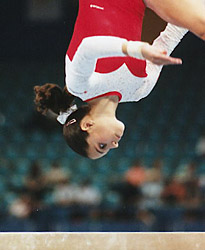

Sarah Deegan (CAN)
1991 Cottbus AA Silver Medalist

Sarah was born on March 27, 1981, in Oshawa, Ontario. She was coached by 1980 Olympic champion Elena Davydova. Deegan had a brief NCAA career (UCLA in 2000) but decided to end her gymnastics career completely. She returned to Canada and completed college there.
Competition Results
1995
Jr. CAN Championships: 1st AA
San Juan International: 7th AA
1997
CAN Championships: 1st AA
China Cup: 7th B, 8th V
Intl. Championships of Romania: 4th AA, 6th B, 7th UB, 7th FX, 8th V
World Championships: 24th AA
1998
American Cup: 13th AA (prelims)
CAN Championships: 6th AA
Sagit Cup: 3rd FX, 8th B
This page was created on November
20, 2005.
© Gymn Forum